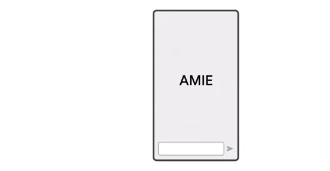
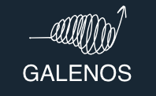

Ava Homiar
I'm a researcher in the Division of Clinical Informatics at Beth Israel Deaconess Medical Center and Harvard Medical School, and an incoming MMSc student in Biomedical Informatics at Harvard. I develop and evaluate AI-driven digital health tools for patient engagement, health communication and clinical decision-making.
Research interests
- Clinical informatics
- Conversational AI in medicine
- LLMs for evidence synthesis
- Digital mental health
- Health literacy
- Wearables and real-world data
- AI policy and governance
Experience
-
2025 – present
Research Coordinator Department of Medicine, Beth Israel Deaconess Medical Center, Harvard Medical School
-
2025 – present
Research Assistant II Division of Clinical Informatics, BIDMC and Harvard Medical Faculty Physicians
Education
-
2026 – 2028
Master of Medical Science (MMSc), Biomedical Informatics Harvard Medical School, Boston
-
2019 – 2023
Honours B.Sc., Life Science McMaster University, Hamilton, Canada
Projects
-

2025 – presentAMIE: a research AI system for diagnostic medical reasoning and conversations
Beth Israel Deaconess Medical Center, with Google Research
Image: Google Research
-
2024 – present
EMPATHICA: a chatbot for enhancing medication literacy
Beth Israel Deaconess Medical Center and Dana-Farber Cancer Institute
-
2025 – present
Remote patient monitoring for people with cancer
Evaluation of the Vitalera platform, Beth Israel Deaconess Medical Center
-
2025 – present
Telehealth programs for traumatic brain injury
Beth Israel Deaconess Medical Center, with Veterans Affairs
-
2024 – 2025
Large language models for living systematic reviews
Prompt engineering for screening and risk of bias, GALENOS, University of Oxford
-

2024 – 2025GALENOS living evidence on anxiety, depression and psychosis
Oxford Precision Psychiatry Lab, University of Oxford
-
2022 – 2023
Digital technology use in people with schizophrenia
St. Joseph's Healthcare Hamilton
Preprints
- A prospective clinical feasibility study of a conversational diagnostic AI in an ambulatory primary care clinic Brodeur P, Koshy JM, Palepu A, Saab K, Homiar A, et al. (2026). arXiv.
- Using Google Takeout donations for suicide prevention research: study design and lessons learned Comtois KA, Smythe P, Kerbrat A, Kim EH, Crouch N, Homiar A, et al. (2025). JMIR Preprints.
Publications
- Automatically detecting trends and open questions from mental health publications: a Wellcome-funded GALENOS project Hastings J, Wosny M, Homiar A, Potts J, Thomas J, Cipriani A (2026). BMJ Mental Health.
- Methodological insights from the iterative co-design and phase 2 evaluation of EMPATHICA, a digital health medication chatbot Quintana Y, Homiar A, et al. (2025). AMIA Amplify Informatics Conference 2026.
- Automating the data extraction process for systematic reviews using GPT-4o and o3 Kataoka Y, Takayama T, Yoshimura K, et al., Homiar A, Furukawa TA (2025). Research Synthesis Methods.
- Development and evaluation of prompts for a large language model to screen titles and abstracts in a living systematic review Homiar A, Thomas J, Ostinelli EG, et al., Cipriani A (2025). BMJ Mental Health, 28(1), e301762.
- Cognitive bias modification for social anxiety: protocol for a living systematic review of human studies and meta-analysis Kennett J, Friedrich C, Chiocchia V, et al., Homiar A, et al., Cipriani A (2024). Wellcome Open Research, 9, 657.
- Trace amine-associated receptor 1 (TAAR1) agonism for psychosis: a living systematic review and meta-analysis of human and non-human data Siafis S, Chiocchia V, Macleod MR, Austin C, Homiar A, et al., Leucht S (2024). Wellcome Open Research, 9, 182.
- Real-world behavioral dataset from two fully remote smartphone-based randomized clinical trials for depression Pratap A, Homiar A, Waninger L, Herd C, Suver C, Volponi J, Anguera JA, Areán P (2022). Scientific Data, 9(1), 522.
Full list on Google Scholar.
Talks & posters
- Nov 2025Enhancing cancer medication understanding through an AI-powered patient-centric chatbot. Poster, 18th Annual BIDMC Cancer Research Center Symposium, Boston.
- Nov 2025Design and evaluation of EMPATHICA: a chatbot for enhancing medication literacy. Presentation, AMIA Annual Symposium, Atlanta (co-author).
- Oct 2025AI and whole person care: advancing health literacy in learning health systems. Guest lecture, SBS 515 Health Literacy, Harvard T.H. Chan School of Public Health.
- Feb 2025Evaluating the feasibility and acceptability of digital technology use in individuals with schizophrenia. Poster, AI and Machine Learning Symposium, Harvard Medical School.
- Jun 2023Digital technology use in individuals with schizophrenia. Poster, Canadian Psychological Association Annual Convention, Toronto.
- May 2022Assessing real-world utility of individualized Google searches in the early detection of suicidal behaviors. Poster, Symposium on AI for Learning Health Systems (SAIL), Bermuda (co-author).
Contact
I'm glad to hear about research collaborations, positions and speaking invitations. Email is the best way to reach me.